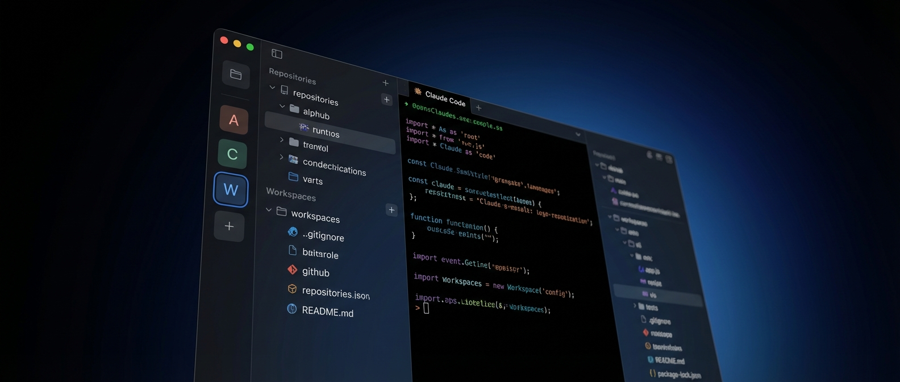
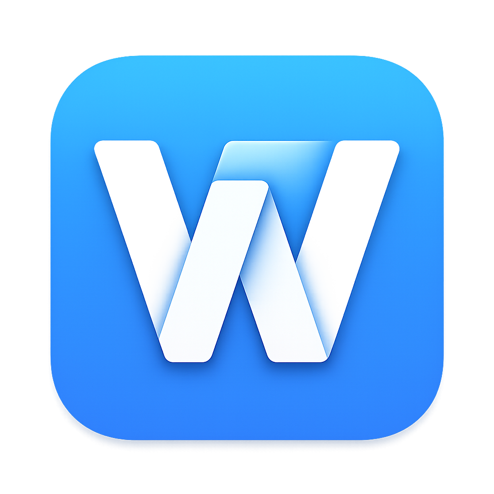
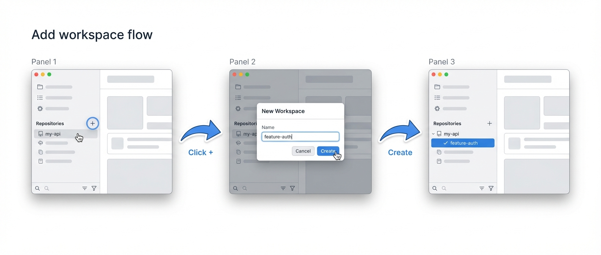
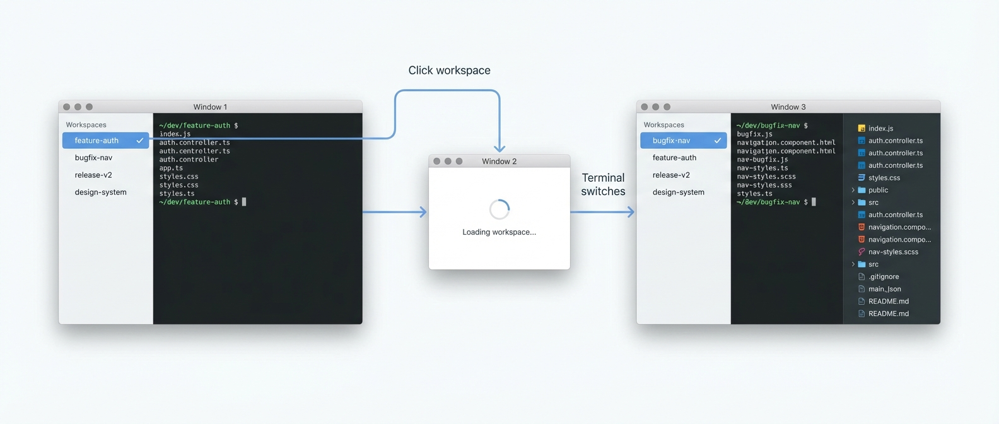
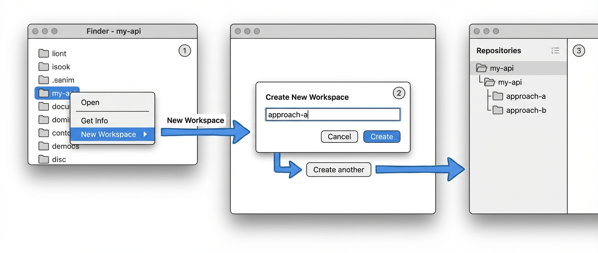
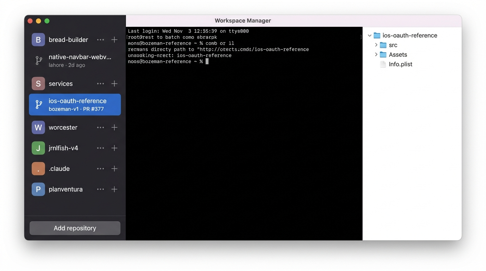
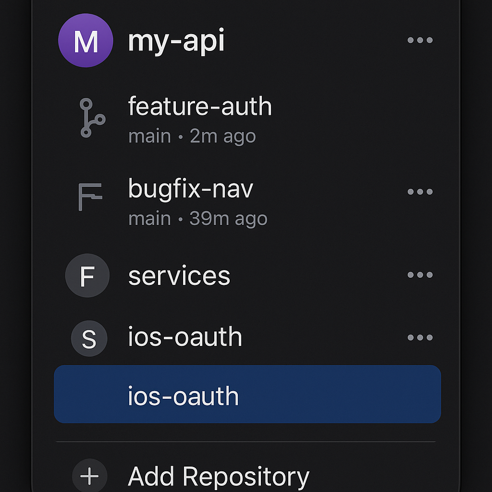
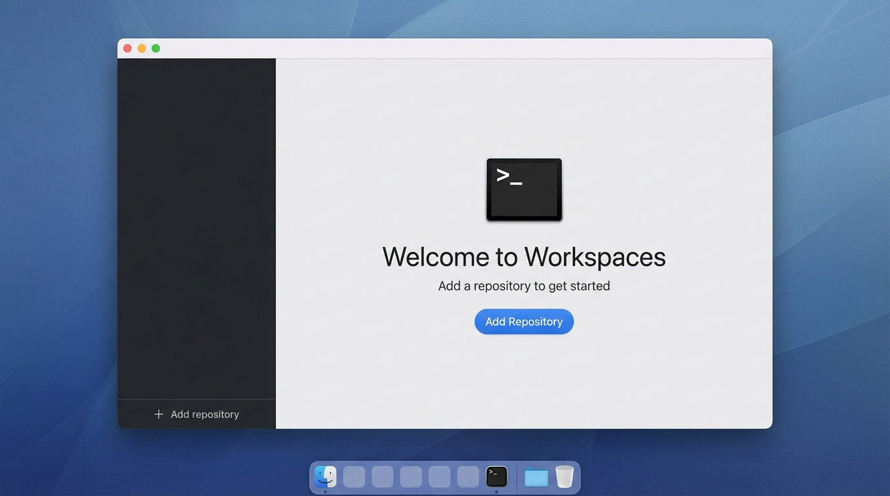

A Mac-native app for managing isolated AI coding sessions. Users add git repositories, fork them into independent workspaces, and run Claude Code or similar AI tools in an embedded terminal.
The key differentiator: Terminal-first design with automatic lifecycle hooks (setup.sh/archive.sh) that eliminate repetitive project setup.
Developers using AI coding assistants face friction when managing concurrent work: context pollution from mixed changes, setup repetition for each new session, no isolation between experiments, and terminal juggling across windows.
WorkSpaces creates isolated git worktrees with embedded terminal support. Each workspace runs setup.sh automatically, giving you a clean slate for every AI coding session.
Primary User
Secondary User
The embedded terminal IS the experience. Not a code editor — use your preferred external editor alongside.
Embedded terminal shortcuts should default to Ghostty behavior. App-level shortcuts are reserved for non-overlapping wrapper chrome actions.
Source repos are never modified. Workspaces are copies. Deleting a workspace doesn't touch the original.
Terminal gets maximum screen real estate. Right pane collapses. Sidebar can hide.

Add a repository from Finder, create your first workspace, watch setup.sh run automatically, start coding in the terminal.
View detailed flow →
Click a workspace in the sidebar, terminal switches to that directory, right pane refreshes with new file tree and git status.
View detailed flow →
Create multiple workspaces from the same repo to explore different approaches without conflicts.
View detailed flow →WorkSpaces follows macOS design language: clean lines, subtle shadows, native controls. The terminal uses a dark theme by default (matching developer preferences) while the chrome can follow system appearance.


